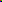

До картинки после картинки. Нажмите на неё для перехода.
Несколько картинок рядом:

Отдельный абзац.
Неразрывный пробел: 123 рублей. Обычные пробелы сворачиваются.
Нет картинки: — и текст остаётся рядом.
 — и текст остаётся рядом.
— и текст остаётся рядом.